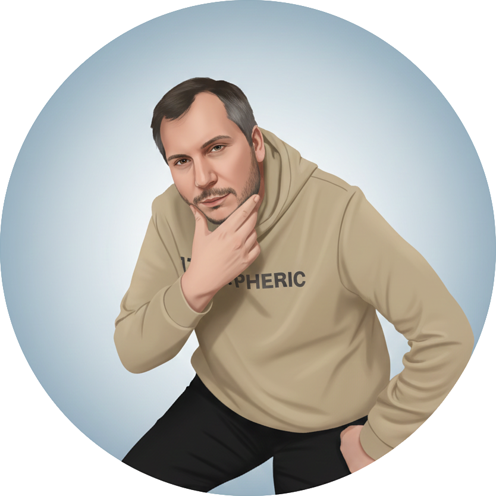
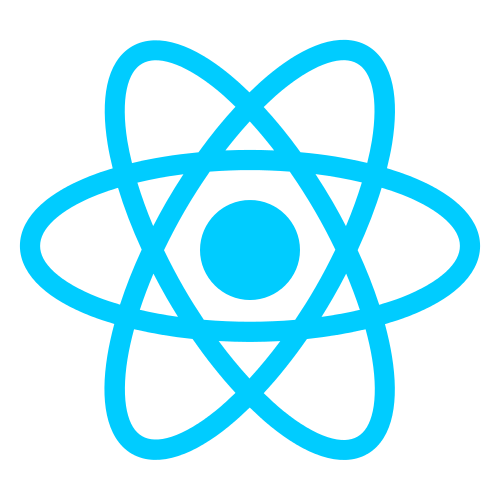
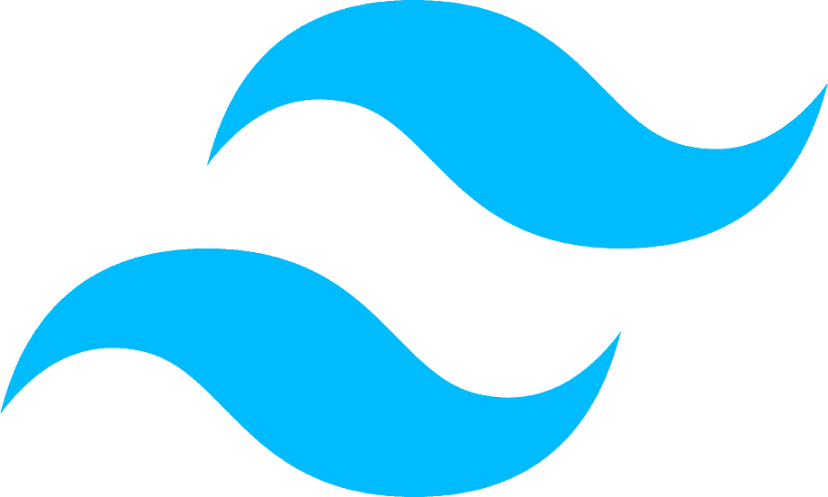

Github
Gestion de code source, branches, pull requests et intégration continue pour des workflows d'équipe efficaces.
Versioning
Développeur web
Je conçois et développe des applications web modernes, performantes et maintenables, avec un focus sur l'expérience utilisateur et la qualité du code.

Je suis un développeur web passionné par les technologies modernes comme React, NodeJS, Symfony et Tailwind CSS.
J'aime transformer des idées en produits concrets, propres et bien structurés, en mettant l'accent sur la lisibilité du code, les bonnes pratiques et la collaboration avec les équipes produit et design.
Toujours curieux, je me forme en continu pour rester à jour et proposer des solutions robustes et pérennes.
Les technologies que j'utilise le plus au quotidien.
Gestion de code source, branches, pull requests et intégration continue pour des workflows d'équipe efficaces.

Développement de backends performants en JavaScript, APIs REST et intégration avec des bases de données et services externes.

Création d'interfaces utilisateurs dynamiques, réactives et maintenables avec composants réutilisables.

Design rapide et cohérent avec un système d'utilitaires puissant, complété par les composants DaisyUI.

Développement d'applications web robustes avec une grande base d'outils et de bibliothèques existantes.

Framework PHP structuré pour construire des applications scalables avec une architecture claire (MVC, services, etc.).
Au-delà des compétences techniques, je mise sur l'humain, la communication et la capacité à m'adapter rapidement aux besoins du projet.
Capacité à vulgariser les sujets techniques et à échanger efficacement avec les profils métiers, design et techniques.
Habitué au travail en équipe, aux revues de code et aux itérations rapides pour faire avancer le projet dans la bonne direction.
Autonome sur les sujets qui me sont confiés, tout en sachant demander de l'aide et me former en continu pour proposer des solutions pertinentes.